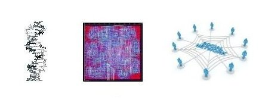

In Computer Science, graph traversal is a set of problems of visiting all the nodes(aka vertices) in a graph in a particular manner, updating and/or checking their attributes along the way.
Graph is a very common representation in many applications. Graph traversal algorithms provide crucial tools in many computational fields ranging from genomics to electronic design automation(EDA) to social network analysis.
Graph has more complicated structure than array, list, and tree. The representation of graph could either be matrix or list. Different data structures are preferred in different situation. For example, adjacency lists are often used to represent sparse graph due to less edge storage. However the underlayer representation is beyond the scope of this article. Here we only care about the topology of a graph. Hence we can focus on the algorithm(how we visit nodes).
The visualiztions are intended to help one understand the.
We tailored springy.js, a library using directed forced algorithm to layout graph, to visualize all the algorithms here. All the codes are written in JavaScript.
Breadth-first search(BFS for short) is a classic graph algorithm. Given a graph G(V, E), and a source vertex s, BFS produces a breath-first tree with the root s and all reachable vertices. The traditional BFS algorithm keeps exploring the tree until each reachable vertex has been assigned a level which tells the height in the tree, or the minimum hoops from the root. (In some cases, algorithm will simply preserve the pointer referencing to the precedor.)
Using a stack instead will turn the algorithm into a depth-first search.
The main idea of BFS is traversing all the nodes within a graph level by level. All the vertices in level n are visited before the traversal of level n+1 starts. Usually, a queue* is used in a serial BFS implementation, to keep the order of nodes being visited.
Let's see a live example. Initially, only the root(node 0) is in the queue(marked pink). In the first iteration, we dequeue the first element in the queue(node 0) and visit it, thus marking node 0 grey. Meanwhile, we find all the nodes adjacent to 0(node 1, 2, 3) and put them onto queue, since they have never been dicovered. In the second iteration, node 1 is dequeued and visited. At the same time, one of its neighbours, node 4, is appended to the queue. However, the other neighbour(node 0) is ignored, since we have visited it before. That means we need to keep in mind which nodes have been visited and which haven't in the previous iterations. As you can see, the final result of BFS is a tree.
It's not hard to see the time complexity of BFS is O(V+E) since all the vertices and edges in the graph are marked or colored only once.
Pseudocode:
// start from root
Q.enqueue(root);
mark(root);
while (!Q.empty()) {
u = Q.dequeue();
foreach (v in u.neighbours()) {
if (!v.visted()) {
mark(v);
Q.enqueue(v);
}
}
}
Pseudocode:
// start from root
Q.push(root);
mark(root);
while (!Q.empty()) {
u = Q.pop();
foreach (v in u.neighbours()) {
if (!v.visted()) {
mark(v);
Q.push(v);
}
}
}
The Single-Source Shortest Paths(SSSP for short) is the problem of computing the shortest path distance from a root vertex r to each vertex in a weighed graph.
A good anology is when your driving a car among cities, a call to SSSP subroutine can help you find the shortcut to each city. That's why the algorithm is often used in GPS and network routing.
If the edge weights are all non-negative, then the SSSP problem can be solved with Dijkstra algorithm. Otherwise, Bellman-Ford algorithm can be used instead.
Dijkstra's SSSP explores the graph with a greedy method. In each iteration, the algorithm visits a node with the so-far-smallest distance from root among all the nodes in the graph.
dist(1) is shorthand for "distance from root to node 1"
Assume the root is node 0. To start, make the distance to the other node in the graph with infinity(100,000 is large enough in our case). In the first iteration, node 0 is visited. Meanwhile the dist(1)* is updated to 41 and dist(5) is updated to 29. They are both unreachable before node 0 is visited. In the second iteration, we visit node 5 since it has the smallest distance from root, updating dist(4) to 50, which is the cost if we manage to arrive at node 5(cost 29) first and pay a travel to node 4(cost 21)... After several iterations, we arrive at node 2. This time we are not going to update dist(3), because it costs 132 if we come from 2(cost 50) coming from 3(cost 82) but it only costs 86 if we manage to reach 4(cost 50) and then go to 3(cost 36).
During the exploration, a set Q is used to maintain the unvisited nodes, which provides an operation to extract the minimum. The time complexity of Dijkstra algorithm is relevant to the implementation of Q. If Q is a linked list or array, then finding minium from Q is a linear search through all nodes in Q, which requires O(V). But if we use a Fibonacci heap as a priority queue, the search time can be reduced to O(logV).
Like breath-first search, Dijkstra SSSP also produces a tree(shortest-path tree, aka SPT) for a given root vertex.
pseudocode
// intialize node attributes
foreach (v in G) {
v.dist = infinity;
v.pre = undefined;
}
// all nodes in Q
Q = G.all();
G.nodes[0].dist = 0;
while(!Q.empty()) {
u = Q.dequeue(); //u has the smallest distance in dist[]
foreach (v in u.neighbours()) {
// update v's dist, if find a shorter path
if (u.dist + u.distance_to(v) < v.dist) {
v.dist = alt;
v.pre = u;
Q.reorder(); // since distance changes
}
}
}